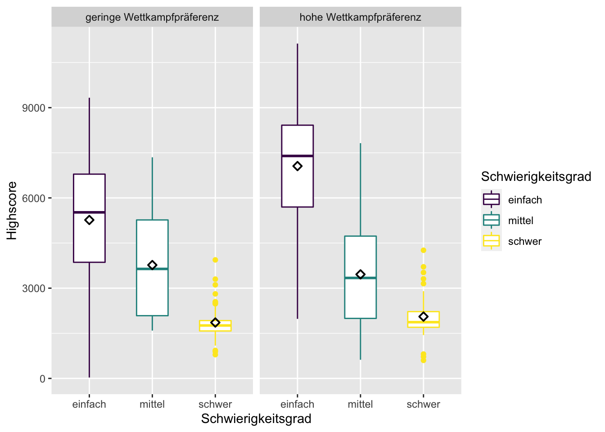

Kapitel 13 Zweifaktorielle Varianzanalyse
Im nächsten Schritt soll eine komplexere Varianzanalyse durchgeführt werden, nämlich eine in der nicht nur ein Einflussfaktor betrachtet wird, sondern gleich zwei. In So einem Modell gibt es drei mögliche Effekte:
- Einen Haupteffekt von Einflussfaktor A
- Einen Haupteffekt von Einflussfaktor B
- Einen Interaktionseffekt der beiden Einflussfakoren
Haupt- & Interaktionseffekte
Haupteffekt bedeutet, dass ein Faktor direkt unt unter allen (einbezogenen) Bedingungen auf die abhängige Variable wirkt.
Bei Interaktionseffekten wirken zwei (oder mehr) Faktoren in komplexer Weise zusammen. Der Effekt geht über eine reine Addition der Haupteffekte der beiden Einflussvariablen hinaus. Bei einer Interaktion ist die Wirkung eines Faktors abhängig von den Ausprägungen des anderen Faktors. Das heißt zum Beispiel, dass sich die Wirkung bei gleichzeitigem Auftreten besonders verstärken kann. Es sind aber auch Abschwächungseffekte denkbar, oder dass eine bestimmte Wirkung von Faktor A nur auftritt, wenn auch Faktor B zu einem gewissen Grad gegeben ist. – Der F-Wert verändert sich.
Interaktionseffekte zu untersuchen ist natürlich besonders spannend.
Wir greifen in diesem Beispiel wieder auf die Daten von Carsten Reichelt zurück und nehmen nun einen zusätzlichen Einflussfaktor hinzu, nämlich die Wettkampfpräferenz. Dieses Konstrukt drückt aus, inwiefern ein:e Spieler:in bereit ist, sich einem Wettkampf zu stellen. Die Variable ist nominal/dichotom umd hat zwei Ausprägungen: geringe und hohe Wettkampfpräferenz.
df %>%
janitor::tabyl(Wettkampfpraeferenz) %>%
adorn_rounding(2) %>%
adorn_totals() ## Wettkampfpraeferenz n percent
## geringe Wettkampfpräferenz 131 0.53
## hohe Wettkampfpräferenz 117 0.47
## Total 248 1.00Für unser Hypothesenkonstrukt bedeutet das, dass wir nun drei Hypothesen haben:
H1: Der Schwierigkeitsgrad beeinflusst den Highscore negativ (siehe oben).
H2: Die Wettkampfpräferenz beeinflusst den Highscore positiv.
H3: Es gibt einen Interaktionseffekt zwischen Schwierigkeitsgrad und Wettkampfpräferenz.
Für H3 sollten wir natürlich auch überlegen, welcher Art die Interaktion sein könnte. Ich lehne mich jetzt mal aus dem Fenster und prognostiziere, dass man erwarten könnte, dass der Einfluss von Wettkampfpräferenz mit steigendem Schwierigkeitsgrad abnimmt. Meine Begründung dafür wäre, das man bei einem hohen Schwierigkeitsgrad weniger Einfluss auf den Highscore hat, selbst wenn man eine hohe Wettkampfpräferenz hat. Das Ergebnis des Highscores ist schließlich auch noch von vielen anderen Punkten abhängig, wie z.B. Spielerfahrung oder generelle Reaktionsgeschwindigkeit. Meine präzisierte H3 lautet also:
H3: Bei zunehmendem Schwierigkeitsgrad nimmt der Einfluss der Wettkampfpräferenz ab.
Muss H1 noch einmal geprüft werden? Ja! Man könnte ja denken, dass man H1 auch weglassen könnte, schließlich haben wir sie im vorigen Abschnitt bereits geprüft. Allerdings kann es natürlich sein, dass sich der gefundene Effekt bei der Hinzunahme neuer Einflussfaktoren verändert, z.B. geringer ausfällt (der F-Wert würde in diesem Fall geringer und damit auch die Signifikanz).
Außerdem können wir die Effekte beider Einflussfaktoren miteinander vergleichen, wenn wir beide aufnehmen.
13.0.1 Deskriptive Analyse
desc_table <- df %>%
group_by(Schwierigkeitsgrad, Wettkampfpraeferenz) %>%
summarize(n = n(),
M = round(mean(Highscore), 2),
SD = round(sd(Highscore)))
desc_table ## # A tibble: 6 x 5
## # Groups: Schwierigkeitsgrad [3]
## Schwierigkeitsgrad Wettkampfpraeferenz n M SD
## <ord> <ord> <int> <dbl> <dbl>
## 1 einfach geringe Wettkampfpräferenz 37 5267. 2196
## 2 einfach hohe Wettkampfpräferenz 42 7058. 2037
## 3 mittel geringe Wettkampfpräferenz 50 3768. 1660
## 4 mittel hohe Wettkampfpräferenz 40 3458. 1601
## 5 schwer geringe Wettkampfpräferenz 44 1858. 617
## 6 schwer hohe Wettkampfpräferenz 35 2056. 796An den Werten für n können wir sehen, dass es auch für jede Kombination der beiden Einflussfaktoren im Datensatz eine beruhigend hohe Anzahl an n > 30 Fällen gibt. Wir können deshalb nach dem zentralen Grenzwerttheorem davon ausgehen, dass sich Stichprobenmittelwerte unterschiedlicher Stichproben normal verteilen würden, selbst in den jetzt sechs Untergruppen.
13.0.2 Levene-Test
Wir wissen bereits aus der vorigen Analyse, dass wir es hinsichtlich der Gruppenvariable Schwierigkeit mit heterogenen Varianzen bei der Variable Highscore zu tun haben. Wir benötigen deshalb in jedem Fall eine Welch-Korrektur für den F-Test der Varianzanalyse. Der Vollständigkeit halber, wird hier dennoch demonstriert, wie eine Analyse der unterschiedlichen Streuung bei einer Zweifaktoriellen Varianzanalyse aussieht.
Zunächst einmal lässt sich der Boxplot über die ggplot-Funktion facet_wrap leicht so aufsplitten, dass alle sechs Gruppen sichtbar werden.
df %>%
ggplot(mapping = aes(x = Schwierigkeitsgrad, y = Highscore, color = Schwierigkeitsgrad)) +
geom_boxplot(width=0.5) +
stat_summary(fun=mean, shape = 23, color = "black") +
facet_wrap(vars(Wettkampfpraeferenz))
Augenscheinlich hat sich die Lage durch die Aufteilung in nun sechs Gruppen nicht wesentlich verschlimmert, denn die jeweils gleichfarbigen Box-Plots weisen immer die höchste Ähnlichkeit zueinander auf und sind von den andersfarbigen immer deutlich verschieden. Auch die deskriptive Analyse der Standardabweichung in der vorhergehenden Tabelle zeigt ja im Übrigen, dass der Faktor Wettkampfpräferenz nicht ursächlich für die Varianzheterogenität zu sein scheint.
Jetzt folgt der Levene-Test für den Einflussfaktor Wettkampfpräferenz:
df %>%
levene_test(Highscore ~ Wettkampfpraeferenz)## # A tibble: 1 x 4
## df1 df2 statistic p
## <int> <int> <dbl> <dbl>
## 1 1 246 8.03 0.00499Ergebnis: Ebenfalls signifikant, also ungleiche Varianzen.
Und da wir uns in H3 auch für den Interaktionseffekt interessieren folgt noch ein multifaktorieller Levene-Test. Die Interaktion wird eingebracht über den Operator * in der Formel.
df %>%
levene_test(Highscore ~ Schwierigkeitsgrad * Wettkampfpraeferenz)## # A tibble: 1 x 4
## df1 df2 statistic p
## <int> <int> <dbl> <dbl>
## 1 5 242 13.2 2.33e-11Wie zu erwarten, ein drittes signifikantes Ergebnis. Wir können also auf keinen Fall von Varianzhomogenität ausgehen. Wir benötigen die Welch-Korrektur.
13.0.3 Durchführung einer mehrfaktoriellen Varianzanalyse
my_model <- afex::aov_car(Highscore ~ Schwierigkeitsgrad + Wettkampfpraeferenz +
Schwierigkeitsgrad * Wettkampfpraeferenz +
Error(lfdn),
data = df)## Contrasts set to contr.sum for the following variables: Schwierigkeitsgrad, Wettkampfpraeferenzmy_model## Anova Table (Type 3 tests)
##
## Response: Highscore
## Effect df MSE F ges
## 1 Schwierigkeitsgrad 2, 242 2547712.45 138.25 *** .533
## 2 Wettkampfpraeferenz 1, 242 2547712.45 7.52 ** .030
## 3 Schwierigkeitsgrad:Wettkampfpraeferenz 2, 242 2547712.45 9.64 *** .074
## p.value
## 1 <.001
## 2 .007
## 3 <.001
## ---
## Signif. codes: 0 '***' 0.001 '**' 0.01 '*' 0.05 '+' 0.1 ' ' 1my_model$Anova## Anova Table (Type III tests)
##
## Response: dv
## Sum Sq Df F value Pr(>F)
## (Intercept) 3742311693 1 1468.8909 < 2.2e-16 ***
## Schwierigkeitsgrad 704465814 2 138.2546 < 2.2e-16 ***
## Wettkampfpraeferenz 19164046 1 7.5221 0.00655 **
## Schwierigkeitsgrad:Wettkampfpraeferenz 49122164 2 9.6404 9.368e-05 ***
## Residuals 616546413 242
## ---
## Signif. codes: 0 '***' 0.001 '**' 0.01 '*' 0.05 '.' 0.1 ' ' 113.0.4 Effektstärke
eta_squared(my_model, partial = FALSE, ci = 0.95)## Type 3 ANOVAs only give sensible and informative results when covariates are
## mean-centered and factors are coded with orthogonal contrasts (such as those
## produced by 'contr.sum', 'contr.poly', or 'contr.helmert', but *not* by the
## default 'contr.treatment').## # Effect Size for ANOVA (Type III)
##
## Parameter | Eta2 | 95% CI
## ------------------------------------------------------------
## Schwierigkeitsgrad | 0.51 | [0.42, 0.58]
## Wettkampfpraeferenz | 0.01 | [0.00, 0.06]
## Schwierigkeitsgrad:Wettkampfpraeferenz | 0.04 | [0.00, 0.09]13.0.5 Visualisierung
Die Visualisierung von Interaktionseffekten hilft erheblich bei der Interpretation. Am einfachsten ist, es, wenn wir als Basis für die Visualisierung die Tabelle benutzen, die wir im Abschnitt Deskriptive Analyse erzeugt hatten. Wir brauchen aus dieser Tabelle die beiden Einflussvariablen und die Mittelwerte:
desc_table %>%
select(Schwierigkeitsgrad, Wettkampfpraeferenz, M)## # A tibble: 6 x 3
## # Groups: Schwierigkeitsgrad [3]
## Schwierigkeitsgrad Wettkampfpraeferenz M
## <ord> <ord> <dbl>
## 1 einfach geringe Wettkampfpräferenz 5267.
## 2 einfach hohe Wettkampfpräferenz 7058.
## 3 mittel geringe Wettkampfpräferenz 3768.
## 4 mittel hohe Wettkampfpräferenz 3458.
## 5 schwer geringe Wettkampfpräferenz 1858.
## 6 schwer hohe Wettkampfpräferenz 2056.Was im Interaktionsdiagramm dargestellt werden soll, ist genau das, was oben in der Tabelle steht: Die Mittelwerte des Highscores und zwar in Abhängigkeit von den beiden unabhängigen Variablen. Hätten wir nur einen Einflussfaktor, würden wir das mit einem Balkendiagramm machen (siehe oben: Schwierigkeitsgrad auf die x-Achse, Mittelwert des Highscores auf die y-Achse).
Bei zwei Faktoren bietet sich ein Liniendiagramm an. Der zweite Faktor kann dann durch unterschiedliche Linien (Argument group) dargestellt werden, die zur besseren Übersichtlichkeit auch noch verschieden eingefärbt werden können (Argument color).
desc_table %>%
ggplot(mapping = aes(x = Schwierigkeitsgrad, y = M,
group = Wettkampfpraeferenz, color = Wettkampfpraeferenz)) +
geom_line() +
# Ab hier nur noch "Aufhübschung" des Plots
ylim(0, 8000) +
labs(x = "Schwierigkeitsgrad",
y = "Mittelwert Highscore") +
theme_minimal() +
scale_color_manual(values = c("green", "deeppink"))In dem Interaktionsdiagramm zeigt sich, dass die von mir Prognostizierte Interaktion vor allem im einfachen Schwierigkeitsgrad zum Tragen kommt. Hier ist es tatsächlich so, dass Probandinnen mit hoher Wettkampfpräferenz deutlich besser abschneiden als solche mit niedriger. Auf mittlerem Schwierigkeitsgrad ist die Tendenz jedoch umgedreht. Hier sind Personen mit niedriger Wettkampfpräferenz etwas besser. Der Mittelwertunterschied ist jedoch gering. Bei schweren Schwirigkeitsgrad dreht es sich wieder, aber auch hier ist die Mittelwertdifferenz gering. Es ist also kompliziert. Möglicherweise gibt es einen zusätzlichen Effekt, bei dem Personen mit hoher Wettkampfpräferenz durch einen besonders schweren Schwierigkeitsgrad zusätzlich angespornt werden einen hohen Highscore zu erzielen. Um das zu untersuchen sind unsere Daten aber leider nicht differenziert genug. Festzuhalten ist aber, dass sich die H3 (A-Version) bestätigen lässt (das zeigt der F-Wert oben) und dass zumindest die visuellen Ergebnisse für Gruppe “leicht” für die präzisierte B-Version der H3 sprechen.
Es stellt sich jetzt natürlich die Frage, welche der beobachteten Mittelwertunterschiede sind signifikant?
13.0.6 Posthoc-Tests
Bis hierhin haben wir festgestellt, dass sich wohl alle drei Hypothesen bestätigen lassen. Müssen wir einen erneuten Posthoc-Test durchführen? Und wenn ja für welche Hypothesen?
Für H1 (Haupteffekt des Schwierigkeitsgrades) haben wir den Post-Hoc-Test bereits im Ersten Abschnitt bei der einfaktoriellen Varianzanalyse ausgefüht.
Für H2 (Haupteffekt der Wettkampfpräferenz) brauchen wir keinen Posthoc-Test, denn der Faktor Wettkampfpräferenz hat nur zwei Ausprägungen. Die Varianzanalyse hat einen signifikanten Haupterfeffekt ergeben, es ist klar das sich nur diese beiden unterschieden können (um beim Bild des Omnibustests zu bleiben: Es sitzt nur ein Mittelwertunterschied im Bus)
Für H3 (Interaktion) wäre ein Posthoc-Test natürlich interessant. Es wäre wichtig zu wissen, ob sich die Personen mit hoher vs. niedriger Wettkampfpräferenz in der Gruppe leichter Schwierigkeitsgrad tatsächlich signifikant unterscheiden. Und natürlich auch, ob in den anderen Schwierigkeitsgraden signifikante Unterschiede vorliegen.
Ich habe leider noch nicht herausgefunden, wie man in R am besten einen Posthoc-Test für Interaktionseffekte rechnet (für Hinweise bin ich dankbar). Bis ich es herausgefunden habe, behelfe ich mich, in dem ich eine
Bis ich diesen Hinweis erhalten habe, behelfe ich mich mit folgendem Code
df %>%
mutate(Gruppe = str_c(Schwierigkeitsgrad, Wettkampfpraeferenz, sep = "-")) %>%
games_howell_test(formula = Highscore ~ Gruppe) %>%
mutate_at(c("estimate", "conf.low", "conf.high"), format, digits = 0, nsmall = 0) %>%
select(group1, group2, estimate, p.adj.signif) %>%
filter(str_extract(group1, "^[einfach|mittel|schwer]") == str_extract(group2, "^[einfach|mittel|schwer]"))## # A tibble: 3 x 4
## group1 group2 estimate p.adj.signif
## <chr> <chr> <chr> <chr>
## 1 einfach-geringe Wettkampfprä… einfach-hohe Wettkampfprä… " 1791" **
## 2 mittel-geringe Wettkampfpräf… mittel-hohe Wettkampfpräf… " -310" ns
## 3 schwer-geringe Wettkampfpräf… schwer-hohe Wettkampfpräf… " 198" ns